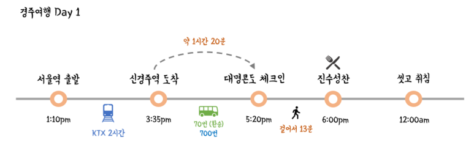
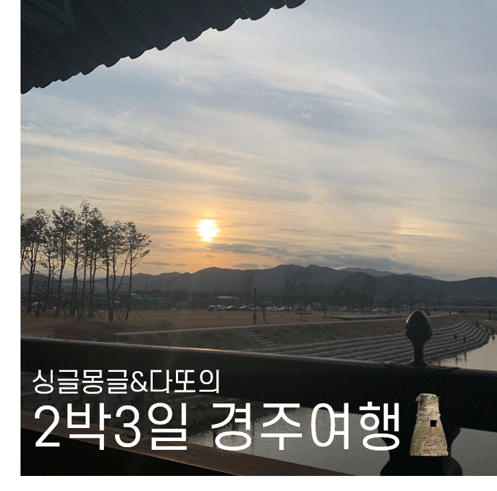

신臣들이 생각하건대, 新(신)은 '덕없이 날로 새로워진다' 는 뜻이고 羅(라)는 '사방을 망라한다'는 뜻이므로 新羅(신라)를 나라 이름으로 삼는 것이 마땅하다고 여겨집니다.
회사일로 국내 출장을 여러번 다니면서 초등학생 때 수학여행 이후로 처음으로 방문한 경주는 꼭 한번 여행으로 오고 싶다는 생각을 했었어요
그리고 퇴사를 하자마자 준비한 경주 여행!
과거의 아름다운 신라를 온전히 담고있는 경주는 지금까지 제가 갔었던 국내 여행지 중 가장 좋았다고 해도 과언이 아니었습니다 (다또와 함께여서 더 행복했음ㅠㅠ)
 고즈넉하고 운치있는 경주만의 분위기는 그 어디서도 느낄 수 없을 것 같아요!그래서 더욱 사랑할 수 밖에 없는 경주에서의 2박 3일 여정! 함께 보실까요? :)